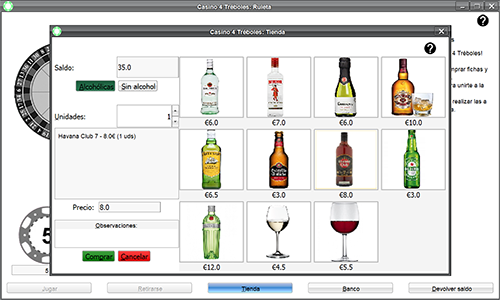

Casino 4 Tréboles:Tienda-> Filtros
Cómo filtrar bebidas
Para poder filtrar las bebidas tenemos dos botones en el menú lateral.

- Botón Alcohólicas: Muestra únicamente aquellas bebidas alcohólicas.
- Botón Sin alcohol: Muestra únicamente aquellas bebidas sin alcohol.
El manejo de los artículos es igual que el visto en el apartado Tienda.